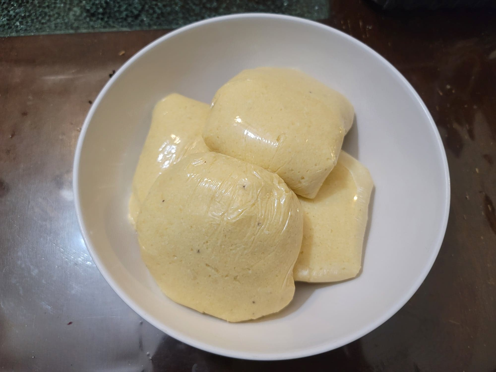

Fufu

Ingredients:
- 1 Yuca, peeled and chopped
- 1-2 Green plantain, peeled and chopped
- 1/4 cup Water, or as needed
- Optional: 1/2 tsp Salt, or to taste
Instructions:
- Add the yuca and plantain to a food processor. Optionally, use the food processor to shred the yuca and plantain before blending it. Then add the water and salt and process until it forms a smooth batter. Add water as needed if not becoming smooth.
- Transfer to a medium pot. Bring to medium heat and stir constantly. Let cook for at least 5 minutes and until the fufu comes to a desired consistency. It will harden as it cools, so stop slightly before the desired consistency. As the fufu cooks, it will become stretchier. As this happens make sure to stir the fufu faster to prevent lumps.
- Divide and transfer to individual plastic wraps to seal. This makes about 4 servings. Seal with plastic wrap and serve hot with stew.